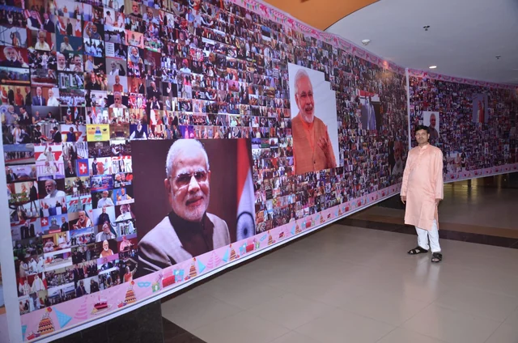
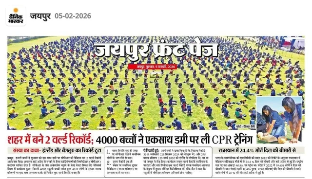
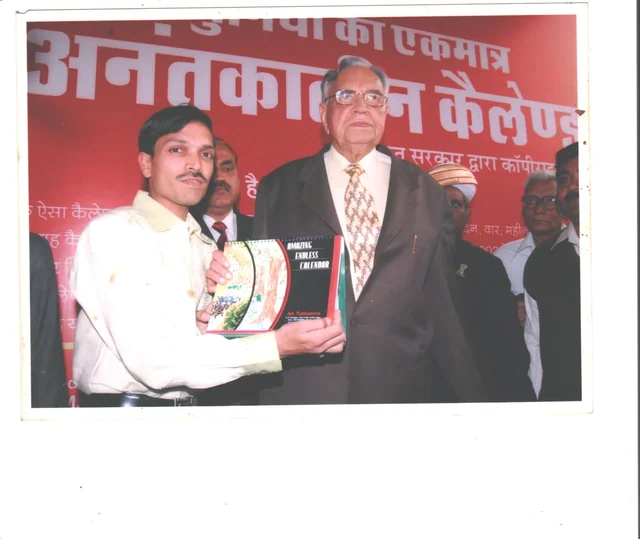
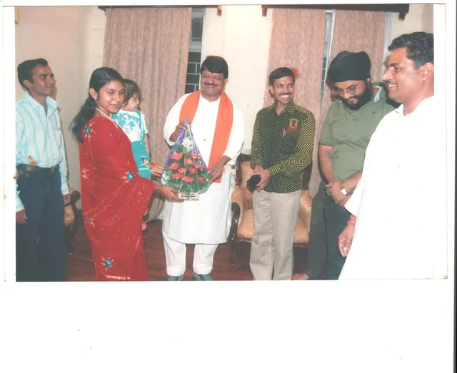
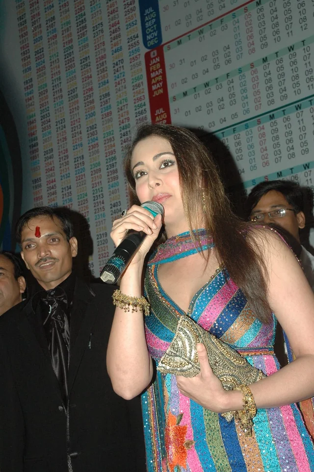
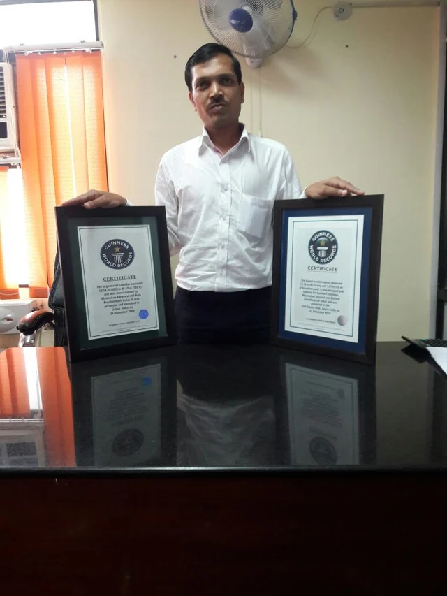

You do not need
an organisation, a budget,
or an idea.
Those are the easy parts to find. What an attempt actually needs is people who would turn up on a cold morning for something that has nothing in it for them. If you know where to find those people, the rest is our job.
Anyone who can
gather a room.
Most of the people who have set records with us had never organised anything larger than a school assembly. That turned out not to matter.
-

Schools & colleges
The most common starting point, and the easiest. You already have the numbers, the hall and the assembly. Attempts are built so students run them rather than attend them.
-

NGOs & causes
If the point is that people should know something, a record carries it further than a campaign will. The attempt becomes the reason the press turns up.
-

Government & civic bodies
Public initiatives where participation is genuine rather than attendance. We have worked alongside departments on permissions, safety and stewarding before.
-

Companies & institutions
An attempt is a poor advertisement and an unusually good day out. Staff who spent a morning making something together tend to remember it longer than an offsite.
-

Artists & craftspeople
Where the artists are paid to teach rather than booked to decorate. If your practice scales to a hundred pairs of hands, it scales to a record.
-

One person
Several of the records on this site were set by a single pair of hands over months. If you have a skill nobody has thought to measure, that is a conversation.
You bring the people.
We bring the rest.
The honest division of labour, so you know what you are agreeing to before you agree to it.
YoursThree things
- The people. Everything else is solvable. This is not.
- A date that works. A hall, a ground or a street, and a morning when the people you have in mind are free.
- Somebody who answers the phone. One person on your side who can make decisions. Attempts fail on committees more often than on numbers.
OursEverything else
- Feasibility. Whether the idea is a record at all, and whether it can be done safely at the size you want.
- The application. Registering the attempt with the record body and getting the rules back in writing before anything is promised.
- Permissions. Venue, authority, traffic, medical cover, insurance.
- Rehearsal. Markers, stewards, timings. Most attempts are won or lost here.
- The attempt. Independent adjudication, stewarded counting, video and witness evidence throughout.
- Evidence. The file that goes back to the record body — and the photographs that go back to everyone who turned up.
The questions everybody asks first.
- How long does it take?
- It depends almost entirely on the record body and the size of the attempt. Some categories are adjudicated in weeks; others take months because the rules have to come back in writing first. We will give you a realistic date in the first conversation rather than an optimistic one now.
- How many people do we need?
- There is no single answer — it is set by the category, not by us. Some records need thousands on a ground; some need one person and a magnifying glass. Tell us roughly how many you could gather and we will tell you what is within reach.
- What does it cost?
- Record bodies charge their own fees for registration and adjudication, and those are published by them, not by us. Beyond that it depends on the venue, the scale and how much you are able to do yourselves. We would rather talk it through than publish a number that would be wrong for your attempt.
- What if the attempt fails?
- Some do. The rules are somebody else's and the adjudicator is independent, which is precisely what makes a record worth having. A well-rehearsed attempt rarely fails on the day; it fails in the weeks before, which is where most of the work goes.
- Do we have to be in Jaipur?
- No. Most of what we do has been in and around Jaipur and Rajasthan, so that is where we know the venues and the authorities best — but the process is the same anywhere and we are glad to hear from further afield.
- We only want to help. Is that a thing?
- Yes, and it is the thing we need most. Attempts run on stewards, counters, markers and people who carry water. No fee, no audition — say so in the form and we will call you when something is being built near you.
Tell us what
you have in mind.
Even if it is only a rough thought and a number of people. The first conversation is about whether it is possible at all — nobody is committed to anything.
- Call +91 80030 03000
- Email manmohan.agarwal015@gmail.com
-
Where
Jaipur, Rajasthan, India